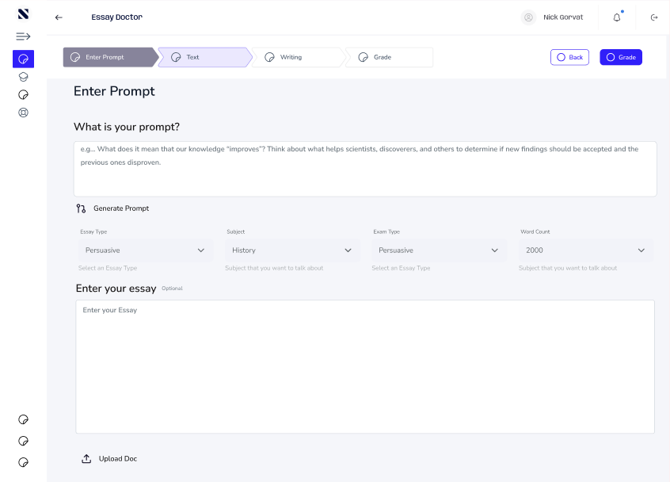
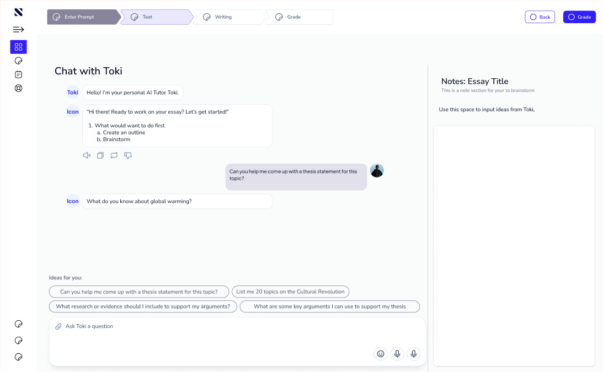
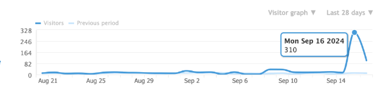
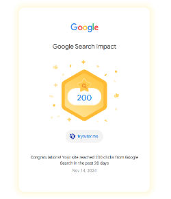
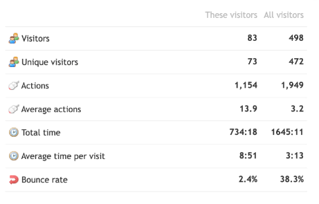
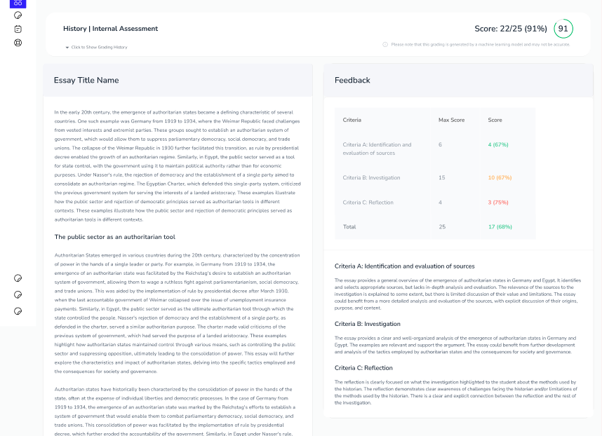

Everyone knows how to ask AI a question. How do you get students to actually learn from it?
Shaping the onboarding, the AI tutoring experience and the product systems that moved Tutor Me from concept into something people could use.
EdTechAI productProduct designOnboarding
RoleFounding DesignerWorkProduct strategy, onboarding, AI interaction design, product flows, design systems and engineering handoffWithThe founders and the engineering teamStatusActivation figures are projected, not confirmed by final product analytics
Working this close to the founders meant product decisions, interface decisions and handoff decisions were usually the same conversation.
Diagram · a student’s first session
01Opens the tutor“What can it help with?”
→
02Picks a starting point“Where do I begin?”
→
03Shares the assignment“What do I provide?”
→
04Works through it“How do I continue?”
→
05Gets a next step“What comes next?”
Each step answers the question a student would otherwise get stuck on.
02 · Onboarding
Reframed around time to value, not setup.
What the experience had to do
Explain what Tutor Me could do
Give users clear starting points
Reduce uncertainty around AI prompts
Move users into the tutoring experience quickly
The redesigned direction
AI-guided onboarding
Interactive tutorials
Clearer prompt examples
More structured first actions
Better transitions into the tutoring experience
Setup is something a product asks of you. Value is what it owes you first.
Essay Doctor · Step 1 · Enter prompt

The first step asks for the prompt, essay type, subject, exam type and word count, with Generate Prompt for students who don’t have one yet.
Diagram · setup first vs value first
Before
Sign up
→
Account setup
→
Open-ended chat
→The student works out what to ask
Redesign
AI-guided intro
→
Interactive tutorial
→
Prompt examples
→
Structured first action
→
Into tutoring
→Value in the first session
03 · The AI tutor
Guided tutoring rather than a generic chatbot.
I worked on the flows that answer the five questions a student has in front of an AI tutor.
Hover a questionWhat the flow answersThe design tension
The challenge was balancing the flexibility of AI with enough structure to make the product easy to use.
Structure is what turns a model into a tutor: knowing where to begin, what to bring, and what the next step is.
Essay Doctor · Chat with Toki

Toki opens with a choice between an outline and a brainstorm, and “Ideas for you” offers ready questions, so the student doesn’t start from a blank prompt.
Diagram · where guided tutoring sits
Open chat
Flexible, but the student faces a blank prompt.
Guided tutor
Starting points, the right inputs and a suggested next step, with the model still free to respond.
Fixed script
Easy to follow, but the AI stops being flexible.
04 · A scalable product system
One shared system instead of a new design for every feature.
The shared design system
ComponentsChat patternsInputsNavigationInteraction statesSpacing and layout rules
Less repeated design work, and more consistency between product and engineering.
Clearer handoff
Flows
States
Behaviors
Edge cases
Written down as practices, so the same questions did not come back on every ticket.
Diagram · one system, one handoff
Shared design system
Components
Chat patterns
Inputs
Navigation
Interaction states
Spacing and layout
→
Written-down handoff
Flows
States
Behaviors
Edge cases
→
Engineeringbuilds from the same parts, without re-asking on every ticket
05 · Growth and activation
The onboarding work sat in the early product funnel.
Stage 01Acquisition
Stage 02Onboarding
Stage 03Activation
Stage 04Adoption
~30%projected reduction in first-week dropoff from the redesigned onboarding and AI guidance
Projected · not confirmed by product analytics
The redesign was aimed squarely at the drop between someone arriving and someone getting something useful out of the tutor. Until final analytics confirm it, that number is a projection rather than a result.
Diagram · the early funnel (widths illustrative, not measured)
Acquisition
Onboarding
Activation
Adoption
Where the redesign aimed
The drop between arriving and getting something useful out of the tutor.
06 · Beyond the product
Tutor Me also gave me exposure to acquisition and distribution.
Reported social growth over roughly two months
+5KTikTok followers
+3KInstagram followers
Reported figures · verify before publishing
Getting users into the product matters.
The experience still has to deliver value once they arrive.

Daily visitors over 28 days, peaking at 310 on Monday, September 16, 2024.

trytutor.me passed 200 clicks from Google Search in a 28-day window, November 2024.
07 · Outcome
A clearer and more scalable product experience.
Improved onboarding
More structured AI guidance
Clearer product flows
A shared design system
More repeatable design and engineering handoff
Stronger thinking around activation and adoption
Early signals
The first subscription payment through Stripe, £19.99, November 2024. Customer details removed.

A segment of 83 visitors against all 498: an 8:51 average visit against 3:13, 13.9 actions against 3.2, and a 2.4% bounce rate against 38.3%.
Essay Doctor · Grade

The grade view scores the essay against each assessment criterion and explains every score.
08 · What I learned
AI products need both flexibility and guidance.
What you can do here→How to begin→Value, quickly
The product became stronger when the experience made it clearer what users could do, how to begin, and how quickly they could reach value.
Flexibility is what the model gives you. Guidance is what the product has to add.